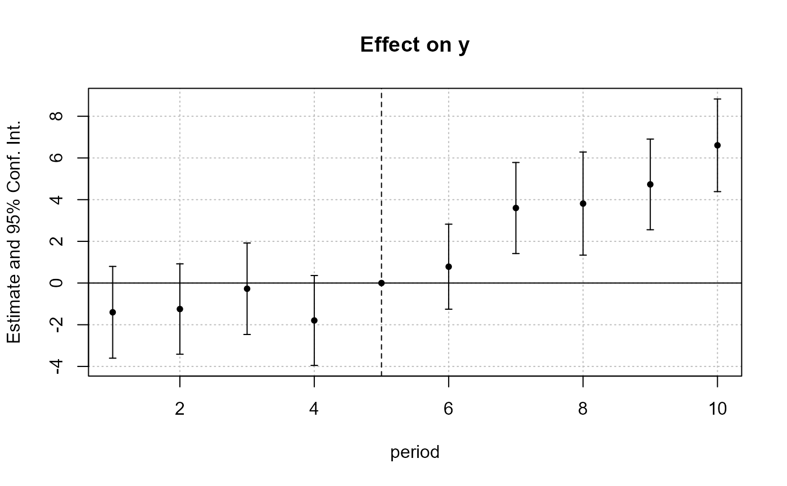
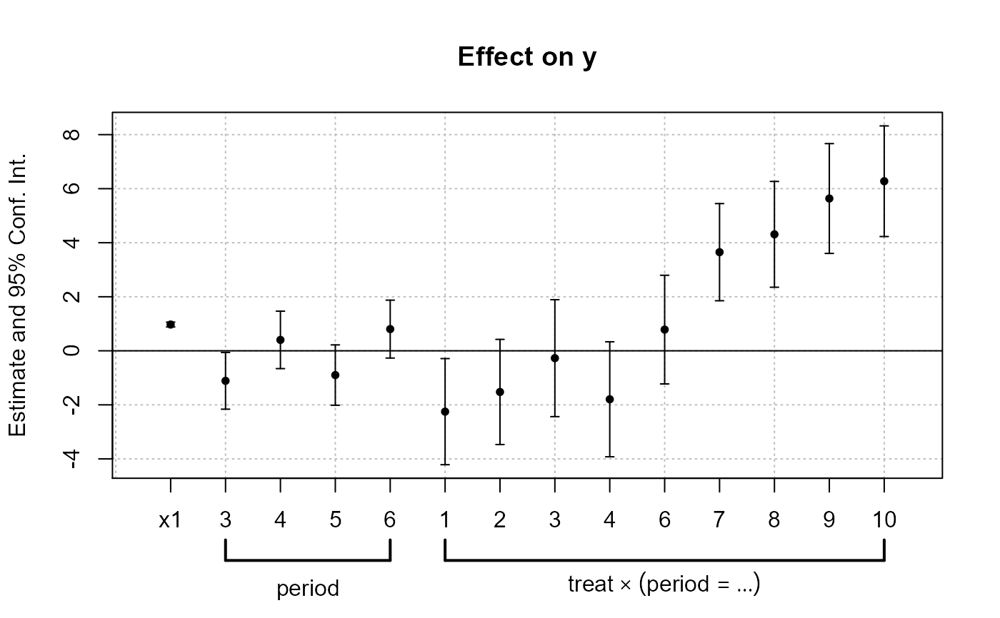

Treat a variable as a factor, or interacts a variable with another treated as a factor. Values to be dropped/kept from the factor can be easily set.
i(var, f, f2, ref, drop, keep, drop2, keep2) interact
| var | A vector to be interacted with |
|---|---|
| f | A vector (of any type) that will be treated as a factor. Must be of the same length as |
| f2 | A vector (of any type) that will be treated as a factor. Must be of the same length as |
| ref | A single value that belongs to the interacted variable ( |
| drop | A vector of regular expressions or integers (if |
| keep | A vector of regular expressions or integers (if |
| drop2 | A vector of regular expressions or integers (if |
| keep2 | A vector of regular expressions or integers (if |
An object of class function of length 1.
It returns a matrix with number of rows the length of var. The number of columns is equal to the number of cases contained in f minus the reference(s).
fixest estimationsIn fixest estimations, instead of using i(var, f, ref), you can instead use the following writing var::f(ref). Note that this way of doing interactions is not endorsed any more and will likely be deprecated in the future.
Laurent Berge
#> x y 2 3 4 #> [1,] 1 1 0 0 0 #> [2,] 2 2 2 0 0 #> [3,] 3 3 0 3 0 #> [4,] 4 4 0 0 4 #> [5,] 5 1 0 0 0 #> [6,] 6 2 6 0 0 #> [7,] 7 3 0 7 0 #> [8,] 8 4 0 0 8 #> [9,] 9 1 0 0 0 #> [10,] 10 2 10 0 0#> x y 2 3 4 #> [1,] 1 1 0 0 0 #> [2,] 2 2 1 0 0 #> [3,] 3 3 0 1 0 #> [4,] 4 4 0 0 1 #> [5,] 5 1 0 0 0 #> [6,] 6 2 1 0 0 #> [7,] 7 3 0 1 0 #> [8,] 8 4 0 0 1 #> [9,] 9 1 0 0 0 #> [10,] 10 2 1 0 0#> z y a.1 c.1 a.2 b.2 c.2 a.3 b.3 a.4 b.4 #> 1 a 1 1 0 0 0 0 0 0 0 0 #> 2 a 2 0 0 1 0 0 0 0 0 0 #> 3 a 3 0 0 0 0 0 1 0 0 0 #> 4 a 4 0 0 0 0 0 0 0 1 0 #> 5 a 1 1 0 0 0 0 0 0 0 0 #> 6 b 2 0 0 0 1 0 0 0 0 0 #> 7 b 3 0 0 0 0 0 0 1 0 0 #> 8 b 4 0 0 0 0 0 0 0 0 1 #> 9 c 1 0 1 0 0 0 0 0 0 0 #> 10 c 2 0 0 0 0 1 0 0 0 0# # In fixest estimations # data(base_did) # We interact the variable 'period' with the variable 'treat' est_did = feols(y ~ x1 + i(treat, period, 5) | id + period, base_did) # => special treatment in coefplot coefplot(est_did)# Using i() for factors est_bis = feols(y ~ x1 + i(period, keep = 3:6) + i(treat, period, 5) | id, base_did) coefplot(est_bis, only.inter = FALSE)#> est_bis #> Dependent Var.: y #> #> x1 0.972*** (0.04556) #> period = 3 -1.111* (0.5354) #> period = 4 0.4034 (0.5423) #> period = 5 -0.898 (0.5698) #> period = six 0.8031 (0.5467) #> treat x period = 1 -2.252* (1.002) #> treat x period = 2 -1.523 (0.9927) #> treat x period = 3 -0.272 (1.104) #> treat x period = 4 -1.794 (1.086) #> treat x period = six 0.785 (1.026) #> treat x period = 7 3.65*** (0.9172) #> treat x period = 8 4.31*** (0.9989) #> treat x period = 9 5.636*** (1.037) #> treat x period = 10 6.276*** (1.045) #> Fixed-Effects: ------------------ #> id Yes #> ____________________ __________________ #> S.E.: Clustered by: id #> Observations 1,080 #> R2 0.544663 #> Within R2 0.453962# # Interact two factors => f2 # # To interact two factor, use the argument f2 data(airquality) aq = airquality aq$week = aq$Day %/% 7 + 1 # Interacting Month and week: res_2F = feols(Ozone ~ Solar.R + i(Month, f2 = week), aq)#># Same but dropping the 5th Month and 1st week res_2F_bis = feols(Ozone ~ Solar.R + i(Month, f2 = week, drop = 5, drop2 = 1), aq)#>#> res_2F res_2F_bis #> Dependent Var.: Ozone Ozone #> #> (Intercept) 8.207 (14.16) 18.51* (7.343) #> Solar.R 0.09633** (0.03139) 0.1007** (0.03244) #> Month = 5 x week = 2 -11.36 (17.18) #> Month = 5 x week = 3 -9.66 (16.05) #> Month = 5 x week = 4 -6.923 (18.28) #> Month = 5 x week = 5 28.32 (18.1) #> Month = 6 x week = 2 10.88 (18.13) -0.3936 (14.93) #> Month = 6 x week = 3 -2.422 (17.22) -13.4 (13.47) #> Month = 7 x week = 1 31.87. (17.27) #> Month = 7 x week = 2 34.35* (16.59) 23. (12.58) #> Month = 7 x week = 3 20.17 (16.54) 8.938 (12.47) #> Month = 7 x week = 4 33.76. (17.26) 22.85. (13.51) #> Month = 7 x week = 5 31.58. (18.19) 20.19 (15.04) #> Month = 8 x week = 1 7.218 (19.98) #> Month = 8 x week = 2 48.12** (17.22) 36.81** (13.56) #> Month = 8 x week = 3 19.17 (16.62) 8.257 (12.48) #> Month = 8 x week = 4 36.5* (17.18) 25.35. (13.46) #> Month = 8 x week = 5 62*** (18.12) 50.76*** (14.91) #> Month = 9 x week = 1 46.47** (16.57) #> Month = 9 x week = 2 -5.661 (16.12) -17.03 (11.82) #> Month = 9 x week = 3 -2.978 (16.1) -13.95 (11.65) #> Month = 9 x week = 4 1.809 (16.73) -8.973 (12.61) #> Month = 9 x week = 5 -8.373 (19.56) -19.47 (16.95) #> ____________________ ___________________ __________________ #> S.E. type Standard Standard #> Observations 111 111 #> R2 0.526361 0.376835 #> Adj. R2 0.407951 0.278441